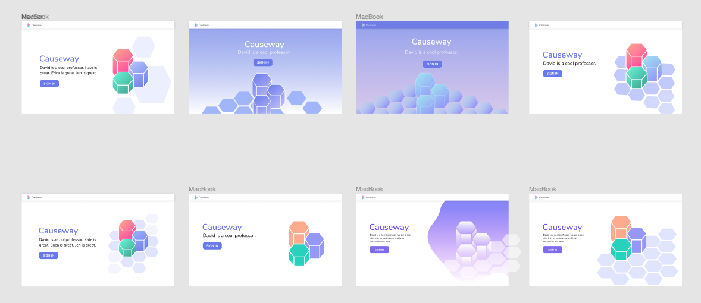
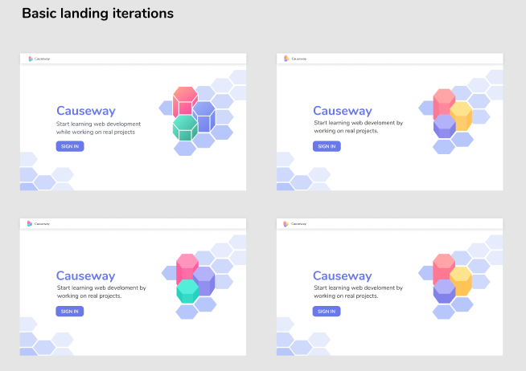
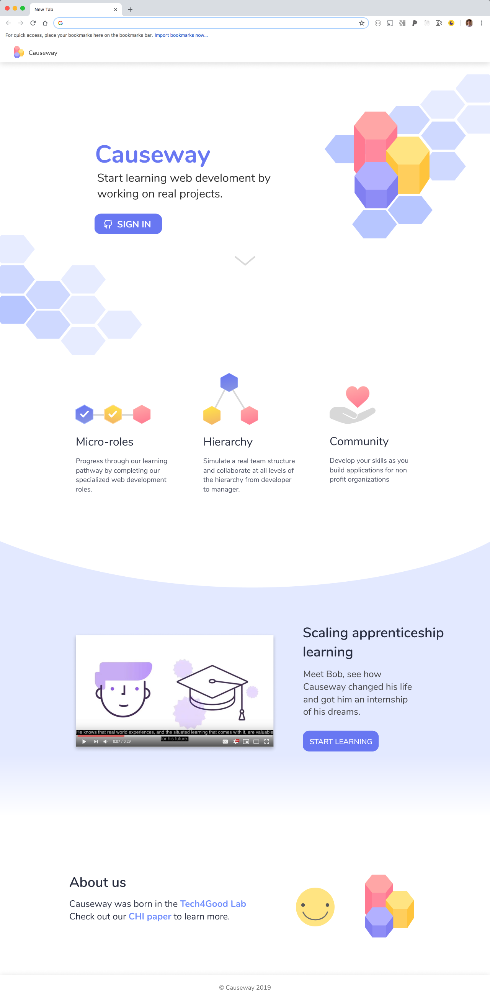
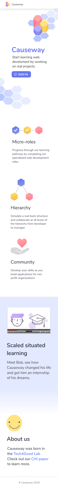
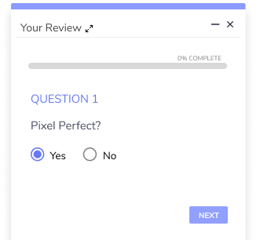
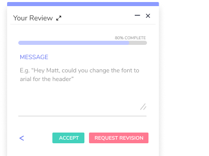
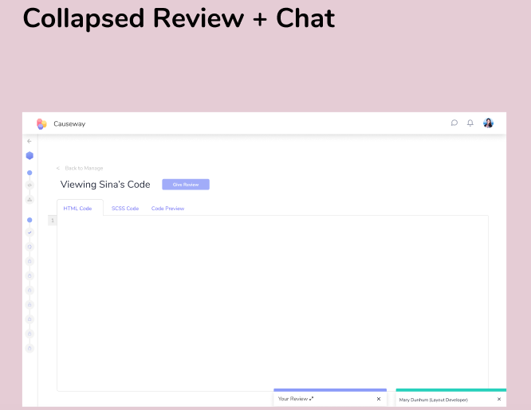
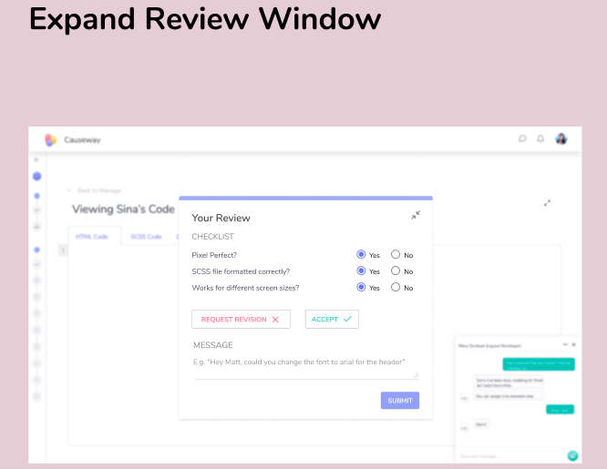
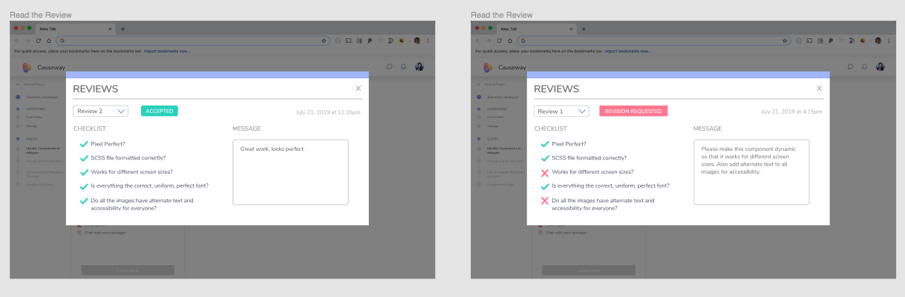

I have been a part of the
Tech4Good Lab
since the begininng of my second year at UCSC. The lab is focused on studying the intersections of
computational systems and computer interaction under guidance of Prof. David Lee.
I have worked as a designer, developer and undergraduate researcher on a couple of projects
with the lab! It has been an amazing experience to work on meaningful projects and build skill sets
that I normally don't get a chance to develop just through my classes.
Causeway
Causeway is a platform for users to learn web development by completing a hierarchy of
roles, starting from widget developers and advancing to page managers, while building
a real project for various organizations. Causeway has been a Tech4Good project for several
years and many students have worked to design, develop and improve it. I recently joined on to
this project as a designer and sometimes developer. I work with the Professor and a team of about
3 undergrad students to design various views and solve usibility problems.
Our design process starts with the problem we are working to solve, such as the need for a chat
or the onboarding process for a new users. The team then works together to sketch out and explore
different layout/design ideas and discusses what needs we must address with our designs. If we end up
having a couple of solid ideas that have different aspects, we will end up making higher fidelity mockups
to then discuss with the Professor or a lead. After agreeing on a design, we try to flesh it out as
much as possible to include the various task flows and details through hi-fi mockups.
Below are several designs I am particularly proud of:
Landing Page
We redesigned the landing page to give new users an introduction to the platform and
welcome users to the overall feel of Causeway. First, using just the logo and overall
design of Causeway, we explored many different options of the landing page's design.

We then agreed on a particular design and worked on different itterations, using different
versions of the logo.

We then expanded the landing page. We worked to find the three main attributes/selling points to
bring to the users attention with an icon and short description. We also included the short video
that another student made about Causeway. Finally, we added additional information about the lab.
Lastly, we developed dynamically sized versions of this landing page to indicate to developers how the
elements of the page should resize for various sized screens. We also made a mobile version of the landing page.


Reviews
Causeway is based on learning through a hierarchy of roles, therefore work doing by those
lower on the hierarchy is reviewed by managers that are higher up on the hierarchy.
Since projects are real, they need to be reviewed so that they're pixel perfect and fully
functional.
I worked on the manager's POV of writing a review and then the user's POV of viewing reviews.
When working on the manager's POV of writing a review, I needed to work through several problems.
One problem was that the manager would need to view the code/screen and write the review, so we didn't
want to have the user have multiple tabs open when doing this action. So we decided to use a pop up
for the manager to have in the lower corner that they could easily open and close.
However, this presented the problem of there being too many sidebars, since we already have an expandable side bar on the left and
a chat popup on the right.
The solution we devised was to have the rveiw window be the size of the chat popup. We then realize that
while reviewing the manager only needs to look at one checklist item at a time, so we have the window show
only one item and the manager can skip forward or backwards to the other items. Finally when they finish the review,
a modal will appear with the completed review where they will be able to change any answers then submit it.
 
The Review Popup, managers go through the checklist items indicating yes or no, then they
have a chance to add a message and indicate if the role is accepted or not.


For the user's POV of viewing the reviews, we created a modal the neatly had all the information about whether the task
was accepted or needed revisions, what checklist items they were missing, notes from the manager and the date of the review.
